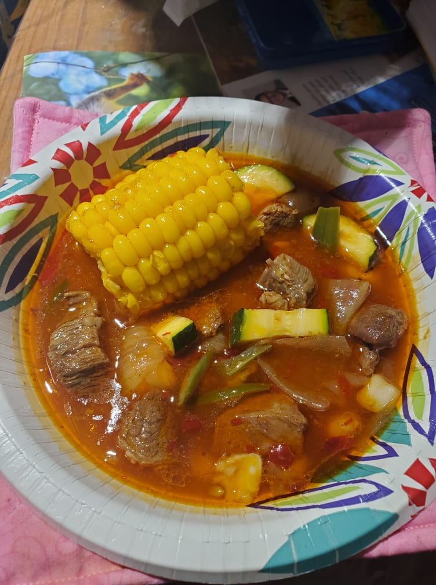

Beef Stew

Beef Stew
BEHOLD! If you've ever been to a really good Mexican hole-in-the-wall
it's likely that you've encountered the colorful bowl of hot Caldo de Res. This traditional Mexican Beef stew
is my personal favorite.
Every family has their own way of making it. Perfect with tortillas and some fresh squeezed lime, this stew is sure to bring a healthy warmth into your life.
Ingredients
For Sauce
- garlic
- onion
- chile ancho
- chile california
- olive oil
- beef broth
For Broth
- beef bones
- water
- apple cider vinegar
- salt
- lemon grass
For Stew
- zucchini chopped
- potatoes chopped
- small corn cobs
- green beans
- chopped stew beef
Steps for Broth
- wash thawed beef bones 3 times in warm water
- fill pot with bones and water and place on stove to boil
- once boiling let boil for 10 minutes then remove from heat
- empty water and wash bones 3 more times
- place bones back in pot, fill with cold water, add apple cider vinegar, salt, and lemon grass
- bring pot to boil then turn to medium low heat for 6 hours
- add more water if water evaporates to below bones
Steps for Sauce
- remove seeds from chiles and chop into big peices
- place chopped garlic, onion, olive oil, and chiles into pan and saute until garlic is browned
- once browned pour contents of pan into blender or food processor
- add a cup of beef broth and blend
- strain if you want
Steps for Stew
- wash chopped stew beef with warm water and rub with salt
- oil pan and set heat to high
- place beef in pan once hot and fry until crispy on edges
- lower heat to medium and add potatoes, zucchini, and corn
- cover and let cook until potatoes are done
- remove bones from broth and add sauce
- add vegetables and beef to stew and stir up well